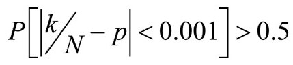
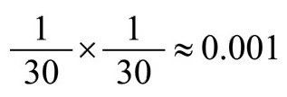
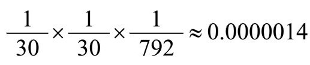
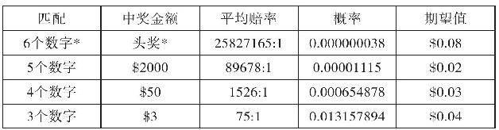

——乔治·菲佛
巧合能引起我们对概率的兴趣。没人怀疑这些故事极其罕见，但要将世界时空缩小的故事得多么罕见呢？
故事1：安东尼·霍普金斯的故事
霍普金斯的故事或许只是其中一个同步发生的故事。想想《傻妹闯情关》这本书可能放置的地方有多少。想想霍普金斯发现这本书之前还有多少人曾捡到过它。想想为什么霍普金斯发现了这本书，而这本书又恰巧属于乔治·菲佛。再想想霍普金斯坐在书旁却没注意到它的可能性。类似这样的故事——或者是更精彩的版本——或许也发生过，只是霍普金斯从未知道，我们也从未听到过。这个故事这么吸引人的一个原因是它和一个特殊的人有关，并且还是一个名人。这个故事精彩的绝大部分原因在于我们认识故事的主人公。霍普金斯这个故事真的非常巧合吗？我们认为它是，但这种感觉从何而来呢？故事或许很精彩，但我们需提供什么证据呢？没有数据我们无法计算可能性。
是的，这可能是一个同步性故事。但为了区分同步性和数学合理性，我们来看一组数字：遗留在地铁站的书的数量，伦敦市中心区书店的数量，每天来市里查找特定书籍的人数。这个故事发生在1976年。这个时间很重要，因为当时没有网络，没有亚马逊网上购物，出门逛书店非常常见。那个时候最容易做的事就是逛书店打发大量时间。
要分析霍普金斯的故事，我们必须考虑伦敦这个大城市。就在我写这些文字的时候，伦敦共有111家独立的小书店。如要生存下去，每家书店平均每天必须有10位客人买书。保守估计这些书店每天必须出售1000本书。更现实地估计应该是约3000本。有些人来浏览，有些人来找想要的书，还有些人只是进来避雨或消遣时间。假设每天只有100人来买书名为《X》的书。
不可能这100人中的任何一人在地铁站候车凳子上都能发现他们要找的书。但我们可以想想有多少人意外地把书落在公共场合，又有多少人故意在列车离开时把看完的书丢在地铁上和地铁站。
如果《X》在首次发行时比较受欢迎，第一个月最少销售了1000本。这些书去向哪里了呢？有些可能没来得及看，在某人家里的书架上睡大觉。有些可能进了二手书店，还有些可能丢在了公共场合。
我估计《傻妹闯情关》的销售量在1万册以上。这样根据大数定律，霍普金斯事件的发生概率介于小和合理之间，至少会发生。那会怎样呢？假设有10本书落在了伦敦的公共场合，有些在公园凳子上，有的在咖啡馆、候车室、酒店大堂，等等，这种猜测合情合理。假设p为有人来到以上10家书店的附近找这本书的数学可能性。N为到伦敦寻找这本书的人数。这N个人很有可能会注意到丢在公共凳子上的书。因此问题来了：有人看到这本书的概率p是多少？怎样计算得出p？遗憾的是不像掷骰子或玩扑克牌，这种情况下的p没那么容易计算出来。计算出p的具体数值几乎不太可能。
不过有一种方法。我们可以在电脑上建立一个模型，模拟靠近和远离他们搜寻的目标的人。这不容易，因为存在很多与人的想法及其经历有关的隐藏变量。但这个模型可以告诉我们一个近似概率p的数值，而这个数值我们现在无法计算出来。另外一个更简单的方法是依靠直觉想象人们在大街上找东西时的行为生成记忆图像。是的，这有带偏见的主观感受之嫌，但这能让我们更深入地思考这一问题。
我们偏离了安东尼·霍普金斯和乔治·菲佛的故事，基本了解了来伦敦买书的人在公共场合找到要买的书的可能性。这个工作要容易得多。计算出结果后我们会发现这个可能性很小，这样我们就会发现霍普金斯和菲佛的故事可能性小多了。因此我们像数学家常做的那样：给出我们想要得到的数值上界（这里指他/她成功找到想要的书的概率边界）。我们还可以像数学家常做的那样做点别的功课：意识到真正的问题后处理起来要复杂得多，因此简化问题，澄清真相。
伦敦是一个大都市，有6万条街道，3000多个小型公园和花园广场，8个大型皇家公园，111家书店和276个地铁站。但如果回顾一下霍普金斯故事的关键词，我们将范围缩小。霍普金斯说他在海德公园广场附近的地铁站发现这本书。乔治确认说他把这本书送给了一个朋友，但朋友在海德公园广场附近弄丢了。离海德公园广场最近的地铁站是大理石拱门站，这一站经威格莫尔街半小时直达查理十字街的大英博物馆附近，这里有伦敦最大的书店。这样就可以将霍普金斯的搜索范围限制在以查理十字街大英博物馆为中心的约3千米内。这一区域有将近1000条街道。但其中很多街道很短，书店很少，很少有人会在这些主街道上找书。并且容易丢书的地方通常在人多的地方，如地铁站或休闲场所如公园。
这个故事的核心不是安东尼·霍普金斯，也不是《傻妹闯情关》这本书，而是有人某一天在一个非常意想不到的地方发现了这本书。
假设有N个人在书店穿梭，查找他们要的书。我们将他们搜索的范围限制在以大英博物馆为中心的3千米内。另外假设这个区域内有10本书落在了公共场所。N个人中是否有人在这10本书中意外发现他们要的书呢？如果N这个数值不大，或许没有人。这是一个非常粗略的思维实验模型，但也没有你想的那么简单，因为搜寻书的人不是在伦敦盲目地乱转。他们更可能在不同寻常的地方发现这些落下的书。现在假设N是一个很大的数字。我们希望通过一天的寻找，他们能找到的丢弃的书为k≤10，因此找到书的成功率约为k/N。换句话说，N次尝试中有k次成功。根据弱大数定律，当N足够大时，成功率非常接近p。因此问题变成：N要多大？当然，如果N=10000，k很可能大于0。尽管伦敦大都市人口超过860万，没人想到某一天会有1万人在伦敦各大街道胡乱地找书。然而，如果我们把时间设置为一年，假设每天有100人在书店找书，其中许多是多次找书的人，则N=36500。两年则N=73000。N数值越大，成功率则更可能超过50%，73000中会有一人找到他要的书。为什么刚好两年呢？为什么不是10年？为什么刚好在伦敦？我们可以美国为例，美国一共有22500家书店，或者以整个世界为例。大数定律告诉我们不要低估世界的大。
这个模型具有创新性，但它没有告诉我们全部真相。隐藏变量无处不在。找书的人可能就在书的附近却没有看见它。并且我们看到，如果要N个人中有人找到他们要的书，N必须足够大，远远大于73000。因此这种事情发生的可能性远比我们想到的k/N小得多。
弱大数定律告诉我们，如果N足够大，p和k/N之间的差额会很小。我们可以假设，如果N=73000（时间为两年），那么k至少为1，如果我们大胆假设N足够大，

。这告诉我们，有大于一半的机会，有人找到想要的书的可能性为：1÷71428≈0.000014，接近玩扑克牌时拿到同花顺的概率，这个概率不是很低了！以上说明实际概率的上界不是很低。真实故事发生在具体某人身上的可能性要小很多。因此，尽管我们不知道原始故事发生的可能性具体多大，但我们确实认为这类故事不是很罕见。
问题关键不是霍普金斯发现了《傻妹闯情关》小说，而是他发现的那本书刚好是乔治的！这种巧合发生的概率相当小了，除非……除非乔治说过他在那附近丢过书。
故事2：安妮·帕里什的故事
安妮·帕里什的故事不同。帕里什只是在书摊前随意浏览，不是特意寻找书，更不用说她自己的书。分析完霍普金斯的故事后，我们能够看出帕里什的故事不是那么少见。
如果我们对安妮·帕里什的生活一无所知，可能会觉得她的故事听起来令人吃惊。故事没有明显的原因。亚历山大·伍尔科特（当时杂志《纽约客》的文学评论家）认识安妮·帕里什，在她在世的时候把这个故事写了下来。他这样写道：
让我们将故事理顺。安妮的母亲也叫安妮，但一般大家叫她安，她1860年和玛丽·卡萨特（美国画家）在宾夕法尼亚州的艺术学院学习绘画。安和玛丽·卡萨特是好朋友。玛丽成了著名的印象派肖像画家后，移居到巴黎工作生活，并与两位印象派肖像画家埃德加·德加和卡米耶·毕沙罗成为朋友。是否有可能安将这本书送给了她的好朋友玛丽，后来玛丽把书带到了巴黎？玛丽于1926年去世，她的遗产和藏书可能也随后分散了，安妮·帕里什那本美国的书“或许”在1926年至1929年某个时间“漂”到了巴黎的书摊上，直到后来安妮·帕里什发现它。
我们再往后面想想。如果你1929年从美国去往巴黎，有可能在参观过程中你来到了塞纳河边的莎士比亚书店和这个书摊前。这是买卖二手英语书有名的地方。如果你是儿童作家，你很可能到处翻寻儿童书架。事实上，我认识的绝大多数作家只要有机会，就会到书店搜寻——尤其是他们创作的题材类型书架。这样说来，我们这个故事中有一个很可能的关系链，将塞纳河书摊上的《雪人情缘及其他故事》与最喜欢这本书的小女孩连接起来。
不过稍等。所有的巧合时间点很重要。安妮一定得在这本书出现在塞纳河畔书摊上时人在巴黎。一旦她去早了，或者在书被人买走后再去，她都会错过机会。说不定另一个美国人已经把书买走了带回了美国，给安妮创造了另一个机会。但这个故事远没有之前的巧合令人惊讶，那本书一路从美国到巴黎又再次返回，这背后隐藏的故事大大弱化了故事的惊喜程度。
设定概率值很难。但我们不妨来试试。首先，我们猜测安妮可能1929年夏天去巴黎。这个可能性的保守值接近0.1。安妮与一位富有的实干家结婚。巴黎和希腊的海岛航行是1929年美国富人首选的欧洲度假胜地。安妮在巴黎逛书摊的可能性有多大呢？我认为可能性为0.3。最难猜的是这本书出现在书摊上的可能性。现在背后的故事要发挥作用了——安妮的母亲和玛丽的关系，玛丽的去世，以及巴黎为数不多销售二手英语书的地方。我估计这个可能性值接近0.01。因此这个故事发生的概率为：p=0.1×0.3×0.01=0.0003，发生的赔率为3331:1。不太可能，但不低于为某本书特意去某个城市，然后在公共椅子上找到那本书的可能性。故事中还有很多难以说明的隐藏变量使我们的估测复杂化，但这也不会使可能性改变超过1/10000，因此安妮·帕里什故事发生的概率稍大于拿四张相同的扑克牌的概率。
故事3：摇椅的故事
安妮·帕里什故事的优势在于时间点比较松散。《雪人情缘及其他故事》或许在那个书摊上躺了数月之久，如果安妮另择时间去巴黎，说不定它还要继续数月待在那里。
摇椅故事要求发生的时间点很精确。如第二章中所述的故事细节：我哥哥住在马萨诸塞州的坎布里奇，他家客厅有一张摇椅。我太太在坎布里奇的一家商场订购了一张一模一样的摇椅。可是商场当时没有存货，因此计划几周后直接送到我哥哥家。一天我哥哥在家举办小型聚会。一个客人坐在摇椅上，不巧将摇椅坐裂成几块。几秒钟后门铃响了，有人送新摇椅来了！
像其他类似故事一样，很难计算出它的概率值，但我们至少能够知道它发生的概率水平。
这是一个典型的同步性例子。但想想这些变量。预定的是一张同一牌子同一设计的摇椅。这个事实促成了这个故事，而不是这个巧合。我太太看到我哥哥客厅的摇椅后想要一张一模一样的。可能我哥哥告诉她哪里可以买。第一个变量是我太太去买时商场没有摇椅存货。如果有存货，故事也就不会发生了。
第二个变量是那个客人的到来。他当时来参加聚会的可能性很大。他是我哥哥的朋友，经常过来造访，我们可以估测他来参加这次聚会的赔率大于9:1，即0.1＜p1≤1。当然还有他选择坐那张摇椅的概率。这很容易计算。我记得哥哥家客厅有两张沙发，共能容纳6人，还有4张椅子，包括这张黑色的摇椅。如果座位是随便坐的，再如果当时还没有人落座，那么那位客人选择坐摇椅的概率0.1＜p2≤0.01。但人们通常不会随意选择椅子坐，尤其当客厅还有摇椅。因此如果对这位客人不了解，我们很难估算出这些概率。为了论述方便，我们暂且同意0.1＜p2≤0.01。
摇椅破裂的时间点很难判断，即客人一坐上去摇椅就破裂的可能性。我们只能假设摇椅快要坏了。考虑到最后我们不得不给估测一些自由度，我们只能如此假设。
送摇椅的时间点相对来说更容易锁定。如果摇椅断货，卖方确定两周内送货，那么预计摇椅将在第二周上班时间的某一个时间段送来。一周的上班时间为3360分钟。像故事描述的那样，我们可以将故事精确到门铃响起的那一秒。不过为了避免夸大细节，我们把时间精确到分钟。故事笑点恰到好处。因此客人坐坏摇椅之时门铃响起的这一可能性p3=1/3360，约为0.0003。我们可以由此得出，故事发生在这一特定群体身上的可能性为p=p1×p2×p3，可能介于0.0000003和0.0003之间。直觉认为这个故事发生的可能性几乎没有。赔率在3333332:1和3332:1之间。至少比买彩票4中1的概率还要低。最多好过玩扑克牌时拿到4张相同的牌的概率。
故事4：梦见金色圣甲虫
圣甲虫（又名金龟子科）是特殊的甲虫物种。它们体型大，呈金色，生有大头棒似的触须，特征明显。美国常见的是六月鳃金龟和日本金龟子，也为数不多。卡尔·荣格的患者曾告诉过他一个关于金色圣甲虫的梦。当时他刚好背靠窗户坐着，窗户是关着的，他听到窗户上传来轻拍的声音。他转过身去，看到一只飞虫从外面敲打窗玻璃，好像要引起他的注意。他打开窗户，抓住了往里钻的飞虫。的确是一只圣甲虫。荣格将这个故事称为同步性的典型案例，指两个事件聚于同一时空中同时发生，不能用偶然意外解释。
如果金色圣甲虫之梦属于同步性的例子，那么我们无法得知其发生的概率。它和摇椅故事分属不同类别，但它们也有相同点，即时间非常关键。如果圣甲虫晚半小时敲打窗户，故事就是另一种景象。宇宙中或许有同步性故事，但这个故事显然有一定的偶然性。如前所述，我们应该记住，这位年轻的女性患者的梦引发了集体无意识这一隐藏变量，我们不能忽视这一点。
六月鳃金龟在6月很常见。或许这位女性患者做梦时刚好有一只六月鳃金龟在敲打她的窗户。如果她睡觉的时候听到了，可能就影响了她的梦。我们的梦往往是受真实声音和光线影响的有意识和无意识经验的混合产物。在雷暴雨中熟睡的人可能梦见遇到暴风雨。因此我们的问题是：女性患者做梦时圣甲虫敲打窗户的可能性是多大？她在向荣格医生描述梦境时圣甲虫敲打她的窗户的可能性有多大？
荣格没有告诉我们这个故事发生的月份。可能是6月。根据我遇到圣甲虫的经验，我觉得第一个问题的答案是1/30。我至少每年（几乎都在6月）看到一次六月鳃金龟敲打我的窗玻璃。第二个问题更难。圣甲虫敲打荣格窗户的概率也是1/30，但这没有考虑另外两个事件的关键时间点，即女患者做梦和荣格看到圣甲虫敲打他的窗户这两件事之间的间隔。我们必须作出假设。受灯光的吸引，六月鳃金龟主要在晚上敲打窗户。女患者认为这个梦很重要，在和荣格医生会面时告诉了他，这也证明了这个梦很罕见，很可能被敲击窗户的圣甲虫打断。我们保守估计她是在6月的某个晚上做了这个梦，那么这个梦与圣甲虫敲打窗户在同一晚发生的概率为

，或者说赔率为899:1。假设这位女患者每周见一次荣格医生，每次一个小时。再假设荣格医生平均每天见6位患者，周末除外。那么整个6月荣格医生共和患者见面就诊132个小时。而圣甲虫之梦就包括在其中，可能10分钟时间讲完。如果以10分钟为节点，6月份132个小时共有792个节点。这意味着整个6月圣甲虫在女患者讲述圣甲虫梦的时候敲击窗户的概率为1/792。因此这种情况发生的概率为：

，小于拿同花顺的概率。故事5：弗朗西斯科和曼努埃尔的错误邂逅
弗朗西斯科和曼努埃尔的巧合不在故事本身，而在于写巧合故事的作者坐在那里听到亲身经历者说着这一故事。我们从这个角度来分析这个故事。弗朗西斯科和曼努埃尔这两个名字不重要，可以是其他名字，如比尔和琼，或弗兰德和弗雷德丽卡。这个故事也可以发生在世界任何一个地方。甚至不一定非得是关于两个男人和两个女人的故事。如果将故事抽象化，我们会发现，这是关于两对人的故事，每对名字相同，第一次在某个地方见面。
现在故事就变成名字配对计算了。世界上有多少名字，其中有多少对名字在一年内的某个时间会遇到？我们根本无法做这个预测。仅在人口为58000的奥尔比亚市，在我写这本书的时候，名叫弗朗西斯科的就有2834人，叫曼努埃尔的有276人。[118]但有一个情况可以确定：全世界同名之人数目很大。实际上是巨大！这类认错人的故事不是很罕见。更不同寻常的是这两对人聊了半天还没意识到他们不是各自要找的人。诚然，这种没在意的情况要少得多。我们设定的这些限制又使这一数字变得更小了，大概数百个。
我们可以大致猜测这种故事发生的概率。假设奥尔比亚市有2834位名叫弗朗西斯科的人，我们要知道任意一天有多少个曼努埃尔从马德里到达奥尔比亚，其中又有多少在狄帕兰酒店大堂和某个陌生人预约见面。[118]明天早上两位名叫曼努埃尔的人将在酒店大堂和两位名叫弗朗西斯科的人见面，他们彼此互不相识。我们可以计算这一可能性。我们可以上午在大堂询问客人的名字，查询他们是否来此约见陌生人。如此10天为一阶段，我们可以计算出所有名叫曼努埃尔的人每天来大堂的平均数，将它除以每天来酒店大堂的人均数。得数可能为0。但如果我们将时间扩大到365天，得数将很可能大于0。当然这种概率计算法非常耗时耗钱。
我们还可以采用另外一种方法。首先计算出每天到达奥尔比亚市的人数。撒丁区是一个岛屿，客人造访此地只能是靠船或飞机。以飞机访客为例，2013年9月前，伊比利亚航空公司只有一个直达航班。但自从我和我的太太离开后，奥尔比亚市遭受暴雨洪水，半个城市被毁。唯一的直达航班被取消，至今没有恢复。首先找到从马德里起飞的一站式航班数（10），以及空客320和340中这些航班的平均乘客数（200），计算得出从马德里平均每天有2000人到达奥尔比亚。由于奥尔比亚是一个非常受欢迎的旅游目的地，到达这里的游客几乎都不会当天飞走。
当然，夏天至冬天到访的游客数会有波动。从马德里的一个电话簿样本我们发现，在马德里有1.3%的人名叫曼努埃尔。我们可以保守地估计，从马德里的10架航班中只有1/4的乘客（500）来自马德里及其郊区。我们由此可以计算得出，奥尔比亚平均一天接待6.5个名叫曼努埃尔的新游客。有些可能坐火车或汽车到达另一个不同的镇。因此我们可以保守估计平均每天接待3个名叫曼努埃尔的新游客。对于这些游客住哪里，哪类人会选择哪类酒店等这些问题，会有多种看法。我的分析将名叫曼努埃尔的客人入住狄帕兰酒店的人均数缩小到0.17。
既然我们谈到平均数，我们不妨建议酒店的选择有多种的——有的酒店在某个时间段有优惠。假设一个名叫曼努埃尔的游客前一天晚上到达奥尔比亚。另一个可能刚刚到达。考虑到这些选项和到达时间，这两个曼努埃尔选择她们各自的弗朗西斯科建议的酒店的赔率为35:1，和摇一对骰子得2个6点的赔率相同。如果在狄帕兰酒店发现两个来自马德里的曼努埃尔，我们是否应该惊讶？我把这个问题留给你来回答。这个巧合的真正问题在于为什么这两对弗朗西斯科和曼努埃尔面谈了那么久才意识到认错人了。我没法回答这个问题，只能说通常不认识的两个人初次见面都有些尴尬，不会直奔主题讨论问题。
这个巧合很特别吗？这种认错人的事件比我们想象的更常见，因为背后的数字比我们想象的更大。我们的分析仅限于两个人名：弗朗西斯科和曼努埃尔。这个故事令我们惊讶，并不是因为这些名字，而是因为我是从弗朗西斯科本人那里听到这个故事的。
我们从另一个角度来设想这个故事：一位名叫X的人来到H酒店大堂与Y见面。另外一名名叫X的人也来到H酒店与另一名叫做Y的人见面。至此，这个故事就是我们在第八章中见到的著名生日问题的变体。不过这个故事更进一步，每个人都被认错一个小时，可能性更大了。想想如果X和Y代表4个不同名字中的任何一个，如X叫马尔科、安德里亚、弗朗西斯科或卢卡（意大利最常见的四个男性名字）。Y叫玛利亚、劳拉、玛尔塔或保拉（西班牙最常见的四个女性名字）。这样他们见面的可能性大大增加。现在有了16种可能性：马尔科可能与玛利亚、劳拉、玛尔塔或保拉见面。同样安德里亚、弗朗西斯科和卢卡也有同样的机会见到她们。
这样就剩16个在H酒店认错人的可能性。[119]为什么不分别采用意大利和西班牙最常用的前100个名字呢？如果将n设为名字对数，可以推断可能性增加为n2。这将意味着如果名字对数为100，可能性将增加到10000。但是随着最常见名字的常见性降低，名字的数量也随之减少。如果我们将名字对数减少，如n≤25，可以肯定地说可能性将大致增加至n2，即625。但是再想想。在意大利三星及以上的酒店约有51733家。如果我们囊括全世界所有的酒店大堂，数字将很大，可以肯定每一个小时就会有两个人在某个酒店大堂认错对方。
“请等一下，”你说，就像我太太说的那样。“弗朗西斯科告诉了你这个故事。弗朗西斯科和曼努埃尔认错人和其他地方有人认错人这两个事件之间的可能性不同。这个巧合不仅仅是指故事发生了，而且是他把故事告诉了你。”是的，的确是这样。但是根据上面的分析，这种故事在全世界一天会发生很多次。我一生就听过一次这样的故事，难道这不令人吃惊吗？如果它经常发生，我为什么应该惊讶呢？
本书中的每一个巧合都可以用数字来分析。难点在于找到重要的隐藏变量。这些数字可能初次看上去不大，正如弗朗西斯科和曼努埃尔误认的故事一样，但通过仔细分析各事件之间的相互关系，看上去小的数字将会越来越大——从而使似乎不可能发生的事情变成必然发生的事件。
故事6：在两个不同的城市坐上同一个司机的出租车
一位女士在芝加哥挥手拦出租车。三年后在迈阿密挥手拦出租车时发现这个司机和芝加哥的出租车司机是同一个人。要解释这个情况，我们首先应该计算出她叫出租车的频率。这位女士是一家私人企业的总经理，经常来往于不同的大城市，坐出租车频繁。非白化病患者司机没那么容易辨认出来。因此常坐出租车的人叫出租车时可能不会注意是否熟悉司机，除非司机碰巧是白化病患者。有可能这位女士在两个不同的城市两次遇到了不同的司机，只是她没有在意这个问题。
我们可以来计算三年前后她在芝加哥和迈阿密叫到同一个出租车司机A（不管司机是否为白化病患者）的概率。在芝加哥招手遇到司机A的概率为1，因为出租车不能无人驾驶。我们首先预计三年内芝加哥司机迁移到迈阿密的概率。目前芝加哥有出租车司机15327名，迈阿密大约5000名。我们无法统计出有多少人从芝加哥转到迈阿密，因此我们只能参考大批迁移的数据。有数据显示，2014年芝加哥人口为2722389，迁到其他州的人口为95000，每年的比例为29:1。如果这个比例适应于芝加哥15327名出租车司机，那么可以推测出三年中有529名司机迁移到其他州。芝加哥是美国第三大城市，迈阿密排名第44位。我们很难估测这些司机迁移到的城市。但是在美国“友好”出租车公司排名名单上迈阿密位居第40位。因此我们可以假设很少有芝加哥出租车司机迁移到迈阿密，估计人数在20和40之间。那么这位女士遇到同一个出租车司机的概率将大于20/15327=0.013，小于40/15327=0.026。胜算在1:76和1:37之间。不是太差！
现在回到白化病司机。由于我们没有考虑三年前后这位女士是否会注意这两个不同地方司机的样子，所以可能性是相同的。故事巧就巧在她注意到了。
故事7：福尔吉布先生的葡萄干布丁故事
葡萄干布丁故事是19世纪著名诗人埃米尔·德尚讲述的。这个故事不能用概率数字来衡量。这是我听到过的最具巧合性的故事之一，部分原因在于关联事件之间的巨大时长。时长一方面增加了可能性，另一方面丰富了故事。这个故事的主要内容是：年轻的时候，德尚吃葡萄干布丁时首次遇到福尔吉布先生。当时葡萄干布丁这道菜在法国几乎没听说过。
10年后，德尚几乎忘记了葡萄干布丁。一天他经过一间餐馆，在门口菜单上看到了这道菜。他走进去点了一份，但柜台一个女服务员告诉他布丁被一位穿着上校制服的先生全部买下了。服务员指向福尔吉布先生。之后又过去多年，德尚从未想起葡萄干布丁。有一天他受邀参加一个朋友的聚会。餐桌上摆了葡萄干布丁，德尚向聚会的主人和朋友们讲述了福尔吉布先生和葡萄干布丁的这个巧合的故事，德尚故事刚讲完门铃响了，福尔吉布先生出现在门口。他也受邀参加朋友的聚会，但弄错了地址，按错了门铃。他的朋友家就在隔壁。
这个故事非常接近偶然邂逅类故事，但我们在谈论4个时间和空间上聚合在一起的变量，这几个变量混杂在一起，几乎不可能将它们分解开来理解。事件跨越的年限也让问题几乎无解。我说的是几乎，不过我们可以尝试用数字来分解它。第一次吃葡萄干布丁时遇见福尔吉布先生的概率为1。故事中特定的人和葡萄干布丁没有实际的关联。这个故事可以是不同的人和不同的菜。计算出10年后再次相遇的概率难度更大。德尚可能经过餐馆时没有注意到菜单上的葡萄干布丁。但这又不太可能，因为对他来说，葡萄干布丁很特别，不像菜单上的巧克力慕斯。因此他非常有可能会注意到，还可能会走进去点一份布丁。巧合的是福尔吉布先生也在那。
我们从这个角度来分析一下这个故事：19世纪中期的巴黎还是一个小城市，不是说人口少，而是说人们是否愿意去。有些人会较其他人更频繁出入巴黎的某些地方。如果福尔吉布先生经过这个餐馆，他也同样会注意到这个菜名，也很可能会进去点一份葡萄干布丁。这种行为与注意到白化病出租车司机很类似。当事物不同寻常，能激起你过去的回忆，你更会注意到它。还要牢记的是福尔吉布先生完全可能每天都在那个餐馆吃饭，就像德尚可能是第一次在那里吃饭一样。因此从这第一次巧合来看，这是两个有着共同兴趣的人在一个小地方的偶然相遇。接下来的巧合才非同寻常，难以分析，即福尔吉布先生按错了门铃，而德尚正在这家吃饭，桌上恰好摆着葡萄干布丁。
并且这次巧合发生在餐馆相遇之后的许多年。我们必须考虑到这些年福尔吉布先生没有按错门铃，走到德尚也在的那家参加聚会，不管桌上是否有葡萄干布丁。
故事8：风中的书稿
尼古拉斯·卡米耶·弗拉马里翁是19世纪法国天文学家和通俗科普作家。《风中的书稿》故事由他讲述。他正在撰写关于大气的科普读物，这本书长达800页。某天正写到风力一章时，一阵大风将窗户吹开，将书桌上整章的书稿吹向倾盆大雨中。几天之后出现了第二个巧合，他的出版商的一个搬运工将丢失的整章书稿悉数送回来了。这个搬运工工作的地方离弗拉马里翁的公寓2千米远。
巧合的是，大风将书稿全部吹走，从弗拉马里翁的公寓天文台大道32号一路吹到他的著作出版社阿歇特出版社圣日耳曼大道79号。这似乎有点匪夷所思。但我们还得提到导致故事发生的一些情况。本故事隐藏的部分是刮风的那天早上，那个搬运工来弗拉马里翁的寓所给他送版面校样。[120]这个人住在弗拉马里翁寓所附近，送完版面校样后就去吃早餐。在回阿歇特出版社办公室的路上，他看到地上被雨水浸湿的纸张——发现是弗拉马里翁的书稿——他以为这是他刚才不小心掉的。他回到办公室后一直没和人提起这事，大概是想等书稿吹干。因此如此一来，故事的起因是发现书稿的人和丢书稿的人之间关系密切。
弗拉马里翁撰写风力章节时天刮狂风也不足为奇。撰写一章书不可能几分钟内完成。这一章他可能已经写了几天或几周了。夏天窗户敞开，风一来显然会将书稿吹走。因此故事的主要事件是吹走的书稿和搬运工之间的巧合。搬运工住在附近，熟悉弗拉马里翁的笔迹，从事着文字性的工作（因此可能对书稿上的内容感兴趣），且偶尔会去弗拉马里翁的寓所找他。这些情况暗示这些书稿有可能会被找到并送还。但是更有可能的是别人发现了这些书稿，这个人可能不认识弗拉马里翁的笔迹，或者是环卫工人，他将这些书稿和其他垃圾一起丢到垃圾桶。
故事9：亚伯拉罕·林肯的梦
林肯讲述了他做的一个梦。梦中他听到一群人在哀悼哭泣，他走出房间想知道哭泣声从何而来。他看不见这些哀悼者，但哭泣声却萦绕在耳边。他走到东房，看到灵柩台上放着一具尸体，周围有士兵站岗。哀悼者们在四周哭泣。别人告诉他总统遇刺被暗杀了。
他之前做过很多先兆性的梦。战争开始时，每个重大国家事件发生前他都做过同样的梦。这是巧合？还是仅仅是潜意识和睡梦状态下显现出来的对不确定事情的可理解性焦虑呢？
林肯梦到自己被暗杀，这可能仅仅是他意识到他职位的不确定性。在此之前没有总统遭遇过暗杀，但这并不意味着他没想到暗杀，尤其在战争时期。和绝大多数梦境相同，预感已成为梦境机制的一部分，我们做梦时仍在“思考”，或者说我们“认为”我们是在做梦。
故事10：琼·金瑟尔的四次彩票中奖
琼·金瑟尔彩票四次中奖。第一次中奖540万，第二次200万，第三次300万，第4次1千万。她的中奖故事从1993年开始流传了18年。我承认她遇到这种事情的可能性微乎其微，但也不是不可能的。从技术上来讲，她的经历不是巧合。巧合没有显性的原因。金瑟尔的故事原因很确定：她通过大量买彩票来选择中奖号码。我们可以认为她4次中奖有些运气成分。当然，多次中奖很罕见，但这其中有隐藏因素。
首先，她第一次中奖使她有钱继续不断买彩票，每次用赌博的损失支付应付给政府的税。这样做很聪明，但80%的头彩中奖者都是这样做的——不停地买彩票，希望下次能中奖。博彩理论心理学家将这种不停购买彩票的行为称为强化有利的历史记录。[121]如果你是头彩中奖者，你不会只是买一两张彩票，你会买数百张，甚至数千张。但他们是怎么选择中奖号码的呢？
据报道，选对4次彩票头奖号码的赔率为18×1024：1，这种可能性很小，1015年才有一次机会。[122]（计算详情请见第七章）但由于我们不知道金瑟尔失败了多少次，从而无法计算出实际的概率。她有一部分信息是缺失的。的确，她是斯坦福大学的数学博士，因此或许她在大量购买彩票时运用了演算法确定中奖的号码。同样我们无从得知她失败了多少次。
我们来看看得克萨斯州的乐透六合彩票。这种彩票每张1美元，从1到54选出6个数字。得克萨斯州乐透六合彩票官方公布的中奖概率如表10.1。假设金瑟尔花1美元买了一张彩票，选中了头奖的6个数字。对于头奖为200万美元的六合彩，中头奖每花1美元的期望值是0.08美元。她还可能获得头奖之外的3个其他奖中的一个，而其他奖项的期望值之和是0.09，因此中任何奖的期望值为0.17美元。即彩民每赌一次，就输掉83美分。
表10.1 乐透六合彩的中奖概率

还有税金和奖金共享的可能性，期望值降至约12美分。彩民数量随头奖增加而增加，所以中奖者共享头奖的可能性增加。
的确，4次中头奖有运气成分。中一次的概率非常低。金瑟尔中奖4次的概率就更低，其概率为小数点后面至少32个0。但这只是因为我们在以4次中奖的琼·金瑟尔为例来说明这一概率。诚然，只要她一次买一张彩票，她和其他任何人中奖次数的可能性（即使一次）相同。但是如果每年售卖10亿张得克萨斯乐透彩票，彩民中头奖的可能性就很高。毕竟的确有人中奖了，尽管在此之前可能已经出售了多张彩票。2014年，美国估计有31818182人花费700多亿美元购买乐透彩票。如果一年售卖700亿张彩票，中奖号码随机挑选（如第六章所述，其实也不是完全随机），那么一年内肯定有人中奖，一个月内中奖的概率仍旧很高。
一个人中奖一次可以理解，但同一个人中奖4次怎么理解呢？像金瑟尔这样中奖的概率在拥有320000000人口的美国还是很高的。她4次中奖似乎不可思议，这只是因为我们把它锁定在琼·金瑟尔一个人身上。
我们来计算一下一个人（不一定必须是琼·金瑟尔）5年内中奖两次的概率。你或许会发现结果令人吃惊。北美洲共有26种不同的彩票抽奖，每年开奖104次，5年内共计13520次开奖，其中平均1/6是头奖，因此中奖次数为2253。我们假设80%的中奖者至少5年每次开奖时会继续像以往一样购买彩票。同时中头奖的平均人数为1.7。
现在我们草率地假设这些中奖事件相互独立。说“草率”是因为我们假定每次开奖时中奖者仍会像以往那样采用同样的方法继续大量购买彩票，以影响下一次中奖。为了便于分析，我们还假设每个中奖者和其他彩民使用同样的方法。换句话说，我们平均化了中头奖者的买彩票方法，否则我们无法分析。
假设x为彩民5年内不断买彩票中奖两次的概率，p为单次开奖中头奖的概率（表10.1）。我们首先计算出5年内首次中奖的彩民不会第二次中奖的概率（1-x）。假设y=1-x。每次开奖中头奖的彩民数量平均为1.7，因此每次开奖新增中头奖的人数增加1.7倍。这意味着在2253次奖中，第一次有1.7位中奖者。第二次有1.7×2位中奖者……最后一次中奖者人数为1.7×2253。换一种方式说，在2253个奖项中，首次中奖者在第一次、第二次、第三次……一直到最后一次开奖中不会再次中奖的概率分别为（1-p）1.7，（1-p）1.7×2，（1-p）1.7×3，……，（1-p）1.7×2253。由于我们假设每次中奖事件之间相互独立，所以首次中奖者不会再次中奖的概率y=（1-p）1.7·（1-p）1.7×2·（1-p）1.7×3·……·（1-p）1.7×2253。
因此，y=（1-p）1.7（1+2+3+……+2253）=（1-p）4516523≈0.49。所以x=0.51，5年内两次中头奖的概率高于50%。
我们可以根据同样的方法计算出一年内世界各地的中奖概率。世界上共有166种彩票。美国以外的很多彩票是一周开奖一次，因此，包括美国的每周两次开奖，全世界两年内每周开奖的次数为9984。一年中头奖的人数为2496（根据美国开奖次数和中头奖的平均比例5:1，世界其他国家或地区的比例为3：1）。根据同样的方法可计算得出y=（1-p）1.7（1+2+3+……+2496）=（1-p）4516523≈0.49，所以x=0.60。
两年内彩民两次中奖的概率为0.97，非常接近1，所以彩民两年内两次中头奖的可能性几乎是肯定的。
琼·金瑟尔4次中奖跨越了18年。按照这个年限，和其他概率一样，世界任何地方的彩民4次中头奖的概率接近1。